Getting started
Overview
Congratulations for having successfully built Anushri!
Anushri is a monophonic synthesizer with an all-analog signal path, paired with a lo-fi digital drum synthesizer. These two sections are controlled by an on-board sequencer/arpeggiator, featuring generative drum pattern sequencing. Anushri is open to the modular world thanks to its analog patching area.
Panels and controls
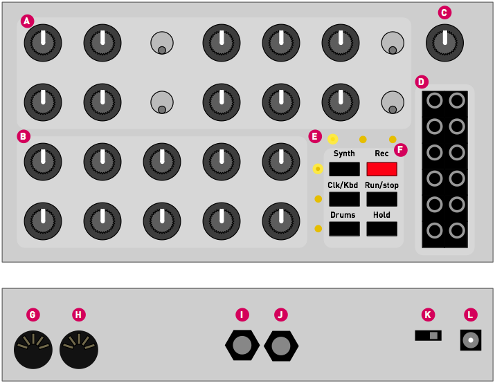
A. The upper group of knobs and switches controls the analog sound synthesis. The signal "flows" from left to right: VCO, mixer, VCF. Most of these knobs are directly interacting with the analog audio signal (no latency, no stepping... but no MIDI control).
B. The lower group of 10 knobs can serve multiple functions:
- Editing the remaining parameters of the synth.
- Setting sequencer/arp/MIDI keyboard options.
- Controlling the drum synth and drum sequencer.
These 3 different "pages" can be activated by the first column of buttons labelled Synth, Clk/Kbd and Drums. One of the three LEDs in the vertical column indicates the current page.
Note that if you intend to play Anushri as a synth, without the drum machine and without experimenting with its sequencer, you can leave it on the Synth page forever and enjoy a "1 knob per function" layout. Even if you are using the sequencer and drum machine, you'll notice that you rarely switch pages.
C. Output volume control.
D. Additional CV/Gate/Audio I/O for modular systems.
E. Indicator LEDs. The purpose of the LEDs is shown below:
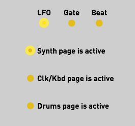
- LFO. The brightness of this LED reflects the LFO value.
- Gate. This LED is lit when a key is held or when the gate input is high.
- Beat. This LED is lit when the steps 1, 5, 9, 13... of the step sequencer are active.
- The 3 remaining LEDs indicate the active page, and thus the function of the lower group of knobs.
F. Switches. The first column of 3 switches is used to select the active page. The second column of 3 switches controls the sequencer. The Hold button serves a few additional functions when held and used as a "shift" key - this will be revealed throughout this documentation.
G, H. MIDI in and MIDI out.
I, J. Audio out and Audio in. The input signal goes through the VCF and VCA.
K. On/Off switch.
L. Power supply connector. A 7.5V or 9V DC supply must be used, with a current rating above 200mA. The connector has a 2.1mm barrel, with a positive center tip polarity. Most universal power supplies allow the polarity to be selected — the polarity being often represented by a diagram like this: – (o , or by the indication tip:. Anushri's power supply circuitry has a reverse polarity protection and can handle voltages up to 12V. Above this, one of the chip inside the unit could be destroyed by overvoltage.
Monophonic analog synthesizer
This section documents Anushri's analog synthesis section.
Anushri follows the classic subtractive synthesis scheme: a VCO producing a rich waveform is filtered/colored by a VCF, and the level of the resulting sound is controlled by a VCA. One particularity of Anushri is that it also includes an additional digital square wave generator. Even if this terminology is inaccurate, it'll be referred to as the DCO in the rest of the documentation (For the sake of accuracy: the square wave comes from a programmable interval timer on the main MCU). This second source can be used to achieve sounds traditionally reserved to dual oscillator synthesizers, such as FM, hard-sync, or rich detuned sounds.
Anushri has 3 envelope generators: an AD envelope used for VCO and PWM control; an ADSR1 envelope used for VCF control; and an ADSR2 envelope used for VCA control. However, the user interface does not allow individual editing of these envelopes: the AD and ADSR1 envelope share the same attack and decay settings; and ADSR2 is controlled through a morphing parameter which gives it the shape of ADSR1, or an increasingly rigid shape resembling a Gate signal.
Anushri has 2 LFOs: a main LFO, syncable to tempo, with 8 different waveforms; and a vibrato/growl triangle LFO, the amplitude of which is controlled by the modulation wheel.
All the synthesis parameters can be accessed from the front panel by pressing the Synth button.
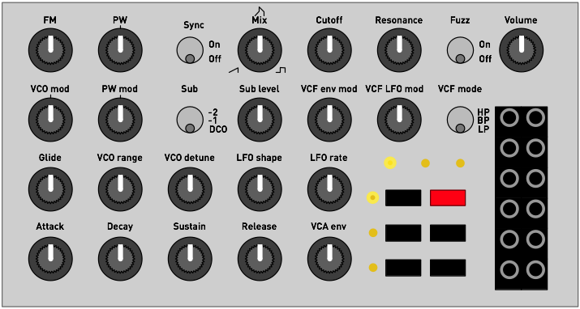
Oscillator section
FM controls by which amount the DCO signal modulates the frequency of the VCO. This modulation is linear FM. Dissonant and metallic timbres can be achieved by setting FM to a high value, and by detuning the DCO and VCO with the VCO range or VCO detune knobs.
VCO mod controls which modulation is applied to the VCO. In central position (the potentiometer has a detent at 12 o'clock), no modulation is applied to the VCO. When turning the knob clockwise, an increasing amount of LFO modulation is applied. When turning the knob counter-clockwise, an increasing amount of AD envelope modulation is applied.
PW adjusts the pulse-width of the square waveform. In central position (the potentiometer has a detent at 12 o'clock), the output signal is a square waveform.
PW mod controls the modulation applied to pulse-width. In central position (the potentiometer has a detent at 12 o'clock), no modulation is applied to the pulse width. When turning the knob clockwise, an increasing amount of LFO modulation is applied. When turning the knob counter-clockwise, an increasing amount of AD envelope modulation is applied.
Sync resets the cycle of the VCO every time the DCO completes a full cycle. This works particularly well when the VCO is set to a higher pitch than the DCO (high value of the VCO range pot), and when an envelope or LFO modulation is applied to the VCO, for this ewwwwww sound. Note that when the VCO has a lower pitch than the DCO, no sound can be heard. This is a useful trick if you want to disable the VCO for external signal processing!
Glide adjusts the portamento time between consecutive notes. This causes the pitch of the previous note to slowly slide towards the pitch of the next note.
VCO range adjusts the pitch of the VCO relatively to the note played on the keyboard, from -12 semitones to +36 semitones. This potentiometer is deliberately "steppy", with one step for each semitones, and a dead-band at octaves (-12, 0, 12, 24, 36 semitones).
VCO detune adjusts the VCO pitch on a fine scale, to create a slight detuning effect between the VCO and the DCO.
Mix controls the balance of the sawtooth and square waveshapers. In center position, both waveshapes are mixed together. Fully turned clock-wise, only the square wave can be heard. Fully turned counter-clock-wise, only the sawtooth wave can be heard.
Sub level controls the level of an additional signal added to the mix. This signal is selected with the Sub switch, from one of these 3 sources:
- The DCO.
- A square sub-oscillator running one octave below the VCO.
- A square sub-oscillator running two octaves below the VCO.
Note that any pitch modulation applied to the VCO will also be applied to the sub-oscillator; but due to the way the sub-oscillator synchronizes its pitch to the VCO, interesting sync-like or quantization/arpeggiation effects can be heard.
Filter section
Anushri's filter is a 2-pole multimode filter based on the State-Variable topology - a circuit made famous in the synth world by the Oberheim SEM. The filter can self-oscillates smoothly when resonance is set to high values.
Cutoff adjusts the filter cutoff frequency, from 18 Hz to 22kHz. Note that by default, filter cutoff frequency tracks the note played by the keyboard (this can be disabled by sending a specific CC message to Anushri).
Resonance adjusts the filter resonance, progressively emphasizing the frequencies in the vicinity of the cutoff frequency.
VCF env mod controls the amount of ADSR1 modulation applied to filter cutoff.
VCF LFO mod controls the amount of LFO modulation applied to filter cutoff.
VCF mode selects the filter mode: low-pass, band-pass, or high-pass.
The audio input at the back of Anushri (6.35 jack) is routed to the filter input, allowing external signals to be processed through the filter, fuzz and VCA.
Fuzz
The signal produced by the VCF can be sent to a fuzz circuit before getting into the VCA. Switch the Fuzz control on for a nasty overdriven sound.
LFO
LFO shape selects the waveform of the main LFO. The following shapes are available:
- Triangle.
- Square.
- Ramp up.
- Ramp down.
- Sample and hold. The LFO periodically takes a random value.
- Bernouilli process. The LFO randomly switches between a high and low value. The rate of transition is affected by the rate parameter.
- Smooth random process. A continuous random waveform made of lines with a randomly selected slope is generated. The higher the rate, the higher the digital manic pixie dream cat tweaks the knobs.
- Noise. The LFO output is a white noise signal. In this case, the rate parameter of the LFO has no effect.
LFO rate adjusts the speed of the LFO. The LFO frequency ranges from 0.06 Hz (a full cycle takes 16s) to 100 Hz. Note that when the rate setting is set to its minimum value, the LFO locks itself to the sequencer/arpeggiator clock, so that the LFO accomplishes a full cycle over a period of 4 beats. This synchronization is achieved through a PLL - it might take a few beats before the LFO effectively locks to the sequence.
Envelopes
Attack and Decay adjust the envelopes attack and decay time. These settings affect both the AD envelope (VCO and PWM modulation) and the VCF ADSR envelope. They might affect the VCA ADSR envelope too.
Sustain and Release adjust the envelopes sustain level and release time. These settings affect the VCF ADSR envelope, and might affect the VCA ADSR envelope too.
VCA env controls the shape of the VCA envelope. When this setting is set to 0, the VCA envelope is the same as the VCF envelope - exactly matching the A, D, S, R settings dialed on the four knobs. When this knob is set to a middle position, the VCA envelope has a null attack, a 75% sustain, and half the decay and release times dialed on the Decay and Release knobs. Finally, when this knob is set to the maximum value, the VCA envelope gets turned into a "gate" signal, with no attack, no decay and release, and a sustain at full level. Inbetween, some "morphing" between the shapes is applied. Refer to the following illustration:
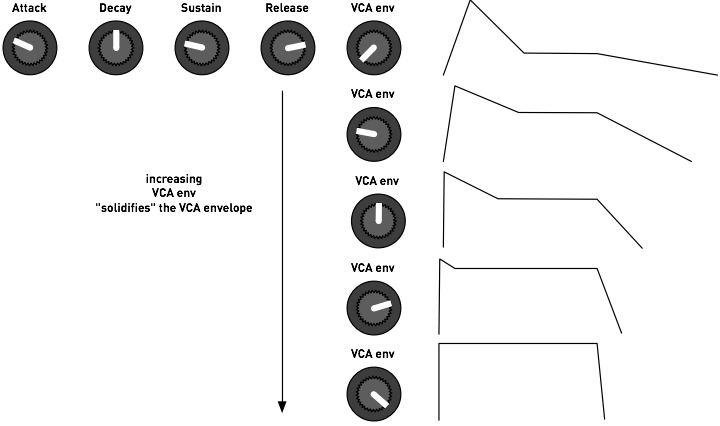
One can think of this setting as a "VCA envelope solidity" parameter. Note that when this control is set to the most extreme "gate" setting, the envelope actually has a non-null but tiny release time (exaggerated on the drawing). This prevents clicks when a note is released.
Technical note: the LFOs and Envelopes are digitally generated, using a 2.45kHz refresh rate and a 12-bit resolution DAC (with 16-bit internal computations).
VCO tuning
Anushri's saw-core VCO uses a temperature compensation scheme (published by Osamu Hoshuyama) which makes it quite stable once the inside temperature of the case has plateaued. A reset-time compensation scheme (De Franco resistor) attenuates the flat detuning in the higher octaves, allowing the VCO to track well over the 55 .. 1760 Hz range.
However, to reach these performances, the VCO needs calibration through a set of two trimmers (Offset and V/Oct) at the back of the board.
To spare you this lengthy process, a software compensation can be enabled that will instantly bias Anushri's internal CV conversion stage to reach the right tuning. To enable this correction:
- Make sure that the Sync switch is at the Off position.
- Hold the Hold button and press Run/stop. A short, faint arpeggio will be heard - this is the sound of Anushri trying to play several notes through the VCO and measuring their frequency in order to evaluate the VCO accuracy. After that, the VCO will be tuned.
You can repeat this operation if the unit has been subjected to large changes of temperature, or if you don't want to wait for the warm-up period and want to start playing in tune immediately.
Enabling this software compensation has two side-effects:
- The VCO will be off-tune when triggered from external CV signals.
- The CV output will be "tailored" for Anushri's own VCO and won't strictly adhere to the V/Oct standard.
If you intend to use Anushri with a modular setup where accurate V/Oct compliance is necessary, it is recommended to disable software tuning correction and take the time to trim the VCO. To disable software tuning correction, hold the Hold button and press Rec.
Interfacing with modular equipment
Twelve 3.5 I/O jacks are present on the front-panel to interface Anushri's signal processing chain with the outside world.
Note that Anushri's internal signals are 5V pp, to allow low-power battery operation - thus, the signals at some audio outputs might need amplification to reach the levels commonly found in modular equipment. However, given that all external signal inputs are fed to virtual grounds through resistors, there is no constraint on the input voltage ranges (well, don't try sending mains voltage there of course!).
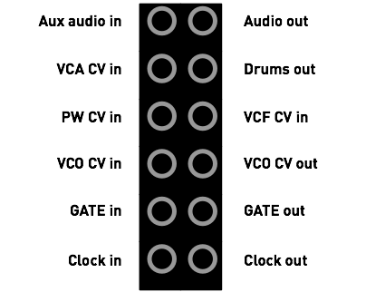
Aux Audio in is an additional input for external signal processing. It is activated by setting the Sub switch to the DCO position, and can be attenuated by the Sub level control. The input impedance is 100kΩ.
Audio out is Anushri's final audio output, unaffected by the volume control.
VCA CV in is added to the other VCA modulation sources (envelope and velocity). This input has an impedance of 22kΩ.
Drums out is an individual output with the digital drum synth's signal. Plugging a cable in this connector will remove this signal from the global audio output.
PW CV in is a CV input for pulse-width modulation. A signal applied here overrides the setting of the PW knob on the front panel. This input has an impedance of 15kΩ.
VCF CV in gets added to all the other modulation sources for cutoff frequency. The scale is 1V/Oct. This input has an impedance of 200kΩ.
VCO CV in gets added to all the other modulation sources for VCO frequency. The scale is 1V/Oct if the VCO has been correctly manually calibrated. This input has an impedance of 200kΩ.
VCO CV out is the CV value produced by Anushri's internal MIDI->CV converter. This CV value incorporates all the arpeggiation, detuning, transpositions, LFO and envelope modulations applied to VCO pitch. The scale is 1V/Oct if software VCO compensation is disabled.
Gate in triggers the attack of the envelopes on raising edges, and triggers the release of the envelopes on falling edges.
Gate out raises to +5V when the envelopes are triggered, and falls to ground level when the envelopes are released (either as a consequence of Gate in triggering or from MIDI note on/off messages).
Clock in can be used to tick Anushri's clock (used for the arpeggiator, sequencer and drum machine) when it is set to external sync. Pulses on this input are expected to have a +5V high level, and last at least 2ms. The clock resolution can be set to either 24ppqn, 8ppqn, or 4ppqn. See the System configuration section.
Clock out outputs a train of 2 ms-long pulses (+5V high level) at each tick of the clock (be it the internal clock, an external MIDI clock, or external triggers through the Clock in input).
A few words about saving and memory...
Anushri does not have a load/save function or presets. All settings from the front panel are saved in internal memory and restored when the unit boots. Because saving takes time - half a second during which the unit freezes, and we don't want this to happen during a performance! - the settings are written to persistent memory only after 15s of inactivity. Thus, it is recommended to leave Anushri alone for this amount of time before switching it off. When the settings are saved to persistent memory, the column of 3 LEDs flashes.
If for any reason you want to revert Anushri to its factory settings, power the unit on while holding the Run/stop button.
Sequencer, arpeggiator and advanced synthesis features
Using the built-in sequencer
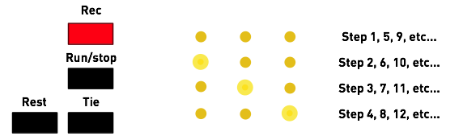
Anushri is equipped with a sequencer with step-by-step recording, mostly inspired by Roland's classic SH-101 and JX3-P sequencers.
A sequence can contain up to 128 steps. The duration of a step is one sixteenth note (4 steps per beat). Each step can either contain:
- A note, with optional accent and slide.
- A rest, which indicates that this step is silent.
- A tie, which indicates that the note triggered at the previous step is not stopped, but rather prolonged, during this step.
To start recording a sequence, press the Rec button. The column of 3 LEDs lights up to indicate that the recording mode is active. The row of 3 LEDs will indicate the current step, as previously illustrated.
- Press a note on the MIDI keyboard to add it to the sequence.
- Press Drums to input a rest in the sequence.
- Press Hold to input a tie in the sequence.
- Move the pitch bend lever (the position doesn't matter) before recording a note, and this note will be slid.
- Move the mod wheel up (the position doesn't matter) before recording a note, and this note will be accented (boost of filter envelope modulation and velocity).
Finally, press Rec when you are done.
To play the sequence, press the Run/stop button. To stop playback, press Run/stop again. When the unit is configured to use an external clock, the sequencer can also be started/stopped by sending the corresponding MIDI messages.
While a sequence is playing, the MIDI notes played on the keyboard will transpose the sequence. C3 (MIDI note #60) will bring back the sequence to its original tonality.
Arpeggiator and advanced synthesis features
Additional synthesis settings, along with arpeggiator and sequencer options can be accessed by pressing the Clk/Kbd button.
The following parameters are now assigned to the knobs:
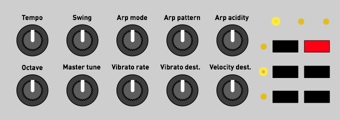
But first, one word of caution... Inadvertently changing some of these parameters can have a drastic and disastrous effect during a performance. Thus, when entering this page, the knobs are locked: the parameter will not change until the position of the potentiometer actually matches the current value of the setting it controls.
Let us take an example. The sequencer is currently running at 120 BPM. Because you were tweaking the slide parameter in the synth section, the first knob is currently at its minimal position. If you press Kbd/Clk and start turning the first knob, the tempo won't immediately jump to its minimal setting. Instead, Anushri will wait until the position of the knob matches 120 BPM (middle position), and from then, it will start having an effect. A few other machines (including other Mutable Instruments products such as Shruthi and Ambika) have a similar feature and call this the snap mode.
When a pot is locked, the left or right LED in the row of 3 indicates in which direction you have to turn the pot to unlock it.
Now back to the actual settings!
Tempo controls the tempo of the sequencer/arpeggiator, from 40 to 240 BPM. When set to its minimal value, the internal clock is disabled and an external clock is used. The external clock can come either from the MIDI in, or from pulses on the Clock in jack.
Swing controls the swing of the internal clock. Swing cannot be applied to an external clock.
Arp mode controls the mode and range of the arpeggiator. The options are:
- OFF - arpeggiator is disabled.
- Up 1 octave.
- Up 2 octaves.
- Down 1 octave.
- Down 2 octaves.
- Up & down 1 octave.
- Up & down 2 octaves.
- Random 1 octave.
- Random 2 octaves.
Arp pattern controls the rhythmic pattern of the arpeggiator. 6 patterns are available. When this control is at its minimum position, a basic eighth note pattern is used.
Arp acidity spices up the arpeggiator pattern by adding slides and accents at strategic times, with a well-balanced amount of randomness. The higher setting, the more likely slides/accents will be added.
Octave acts as a global octave range control for both the VCO and DCO.
Master tune acts as a global fine tune control (with a range of +/- 1 semitones) for both the VCO and DCO.
Vibrato rate controls the speed of the vibrato LFO. The amplitude of this LFO is directly controlled by the modulation wheel of the MIDI keyboard.
Vibrato destination controls the destination of the vibrato LFO. When this control is set to its minimum value, the vibrato LFO affects the pitch (actual vibrato). When this control is set to its maximum value, the vibrato LFO affects the cutoff frequency ("growl" or "wah-wah" effect). In the middle position, both the VCO and VCF are affected.
Velocity destination indicates how MIDI note velocity affects the sound. When this control is set to its minimum value, velocity affects cutoff frequency (the harder the key is pressed, the more open the filter is). When this control is set to its maximum value, velocity affects VCA level (the harder the key is pressed, the louder the sound is). In the middle position, velocity has no effect on sound.
Latch and hold, jamming without MIDI keyboard
While some keys are pressed on the MIDI keyboard, press the Hold button to keep them held. LEDs will be temporarily dimmed. Press Hold again to release them. This can be used as a "latch" function for the arpeggiator, freeing your hands to tweak the knobs while an arpeggio is being held... or simply to create a drone tone.
The Hold function hides another mystery... Even if Anushri has been designed as a MIDI synth module, it is still possible to play it without an external keyboard or sequencer. Hold the Hold button for 2 seconds. A note starts playing. Turn the 5 knobs on the last row to step through scales. Press the Hold button again to leave this mode.
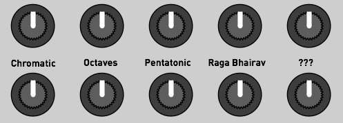
This "knob jamming" mode can even be triggered while the sequencer is recording, and provides a fun way of letting your toddlers, pets or significant other input random but musically coherent (or not) sequences.
Drum synth and generative drum machine
Overview
Anushri has a built-in drum synth and generative drum sequencer which can be played along with the synth section and its arpeggiator/sequencer.
The drum synth comprises three parts, for bass drum (BD), snare drum (SD), and closed high-hat (HH). The bass drum and snare drum sounds are generated digitally, using a pitch and amplitude modulated digital oscillator and a noise source. The high-hat uses sample playback with variable speed, and an amplitude envelope.
The drum machine is playing when the sequencer is running. If you want to play freely (or with the arpeggiator) on top of the drum machine, record an empty sequence - Rec, Rec - and press Run/stop to start the drum machine.
Understanding the generative sequencer
The sequencer controlling the drum section is unlike anything else. It is neither based on x0x-style step programming, nor on presets. It is mostly played by knobs. How does it work? Let us introduce two concepts.
Style map
One sleepless night, you have the crazy idea of tiling the floor of your apartment with your CD collection. You start taking the CDs and putting them on the floor, and then, come up with the idea of grouping them "stylistically"... Wouldn't it be great if CDs of bands that sound similar would be laid out close to each other? All the old-school Techno up north, hip-hop south, with maybe some big-beat of trip-hop in the middle, and an island of jazz on the east. What's great with this arrangement, where objects physically close to each other are sonically related to each other, is that tracing a path through the space would leave a continuous playlist with interesting transitions from one artist to the other...
Now imagine doing the same thing with the collection of drum loops on your hard-drive... All variants of the Amen break would be clustered together, farther apart from the 909 house loops.
There are indeed mathematical techniques to do this kind of arrangements and this is exactly how Anushri stores and organizes drum patterns. In the darkness of the Mutable Instruments labs, we have compiled many drum patterns, tiled them into a 2D map so that nearby patterns occupy nearby cells.
What's the point of doing this? It allows an efficient way of "nagivating" through a large collection of rhythms with just two parameters: the X and Y coordinates on the map. Each rhythm from the original set is referenced by an X and Y position, and changing the coordinates transitions progressively to different, but still related sounding rhythms. It has nothing to do with the incongruous "jumps" one would hear by scrolling through a bank of presets or a list of drum loops files. It allows efficient data compression too - since many similar patterns end up in clusters at the same coordinates, we can pick one single representative in the group and ditch the others...
Note addition/removal lists and event density
From the previous section, you have learnt that Anushri stores a map of drum patterns, organized by similarity, and addressed by X and Y coordinates. What is stored is indeed more complicated than a x0x-like pattern with on and off LEDs...
I'm sure you have already done this... Switch on your 808 (or clone), add a kick on the first step. Then on the 9th. Then on the 5th and 13th to get a four-to-the-floor pattern. Then on the 15th or 16th to add some more variations at the end of the bar... And then the snare... It starts with a simple hit on the 5th or 13th step (or both)... And then maybe a more complex pattern with the 2nd and 8th steps involved to add a syncopated feel. By analyzing such "build-ups" we can make a list of steps by order of importance. For the kick in a techno/house rhythm, the first beat is important, it shouldn't be missing... Closely followed by the 9th and 5th and 13th, and then maybe the 15th or 16th... Experts might or might not agree, but we don't need their opinion... By collecting a large dataset of rhythms, it is possible to compile statistics to answer the following question: "given this drum pattern, if we were to add a bass drum note to it, what would be the most logical position where it would appear"? We can do the operation the other way round: "Given this drum pattern, if we were to remove a bass drum note from it, which one would it be?". This question is easily answered by statistics: take a database of MIDI drum loops, take a pattern, and search for all the occurrences of drum patterns that differ by only one note. What has been added or removed? By iterating the process, we can build the list of steps, sorted by priority, which should be added to a pattern to enrich it - or removed from it to simplify it.
This is the second ingredient! Anushri stores a 2D map of such note addition/removal lists. The X and Y coordinates on the map identify an overall "genre" in which the drum pattern will be performed. Then, by stepping through the note addition/removal lists for BD, SD and HH, we can make the drum pattern more dense or more sparse for each of those instruments. This is expressed by 3 parameters called BD, SD and HH density. When these parameters are increased, we zip through the note addition list to make the pattern richer and richer. When these parameters are decreased, we go backwards through the note removal list, to make the pattern sparser and sparser. It's a bit like creating a simple drum pattern in your sequencer, then micro-polishing it to hell with ghost notes and variations... and then stepping through the undo and redo commands to move back and forth between its simpler self and the drill'n'bass monster it has become.
A last thing: representing drum patterns with note addition/removal lists allows very easily to add meaningful random variations. Play a drum pattern. You want to spice things up a bit? Just look for the next entry (or pair of entries) in the note addition list - it'll tell you where to add this extra snare roll or kick hit. Anushri's drum sequencer has this randomness built-in - it never really repeats itself!
Let's summarize all of this. Anushri generates drum patterns and put you in control of the:
- The sparsity/density of the BD, SD and HH tracks, allowing immediate simplification or elaboration of the pattern played by each drum instrument.
- X, Y coordinates of the base "pattern", with many drum patterns organized by similarity in a 2D map. These patterns are not actual "presets" or x0x type grids, but rather note addition/removal lists for the sparsity/density controls.
If this all sounds complicated to you, here is a final analogy: Anushri's approach of sculpting drum patterns is to a x0x what subtractive synthesis is to additive synthesis. Instead of building everything from scratch, you enrich or simplify/filter basic drum patterns, just like you filter rich waveforms on a subtractive synth instead of building them up from scratch with harmonics.
Drum machine controls
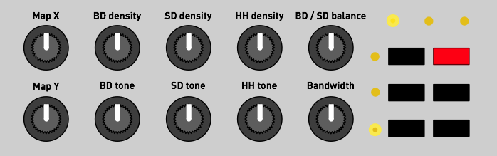
Map X and Map Y control the coordinates of the drum pattern on the style map.
BD density, SD density and HH density indicate how sparse/dense the pattern is in terms of these elements.
BD / SD adjusts the relative level of the BD and SD+HH sound generators. When turned left, the BD dominates; when turned right, the SD and HH dominate.
BD tone controls the tone of the bass drum, by morphing through the following sounds: subdued 808-like kick, stronger 909-like kick, deeper 909-like kick, long decay 808-like kick, noisy industrial kick.
SD tone controls the tone of the snare drum, by morphing through the following sounds: short 606-like snare, snappy 909-like snare, higher and higher pitched 808-like snare, zap!
HH tone controls the tone of the high-hat, by increasing the pitch of the sound, and increasing, then lowering the decay time.
Bandwidth controls the sample rate of the drum synth. Think of it as an 8-bit poor man's filter...
Note that the tone generator is quite lo-fi! Since it uses 8-bit precision with PWM conversion, the BD signal exhibits significant noise when the amplitude decreases (a Mirage or an Amiga did it, too), and the noise floor is quite high. External processing of this signal through EQ, filters or noise gates is recommended, and is facilitated by the individual drums output on the front panel.
It is worth observing that if the drum machine section is not used, Anushri's noise floor can be significantly improved by plugging a jack into the Drums out output to take out of the mix some of the background noise coming out of the processor.
Advanced topics
System configuration
MIDI channel selection
To select which MIDI channel Anushri will respond to, hold Hold and press the Synth button, then play a note on the MIDI channel you want it to respond to. Note that the active MIDI channel is indicated by a combination of LEDs:
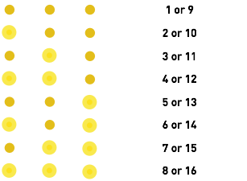
MIDI out message filter
Hold Hold and press the Kbd/Clk button to select the messages that Anushri sends to the MIDI out. The LED temporarily displays the message types which are enabled/disabled for transmission. Pressing the switches activates or deactivates those messages.
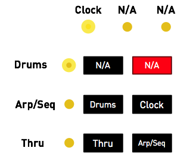
When the Thru LED is lit, incoming MIDI messages are forwarded to the MIDI out.
When the Arp/Seq LED is lit, the note events generated by the sequencer and arpeggiator are sent to the MIDI out (for example to trigger external gear using Anushri's arpeggiator and sequencer).
When the Drums LED is lit, the note events generated by the drum pattern generator are sent to the MIDI out, on channel 10 (for example to trigger an external drum module).
When the Clock LED is lit, the start/stop and clock events driving Anushri's sequencer are sent to the MIDI out.
Clock resolution
Hold Hold and press the Drums button to change the resolution of Anushri's clock system.

24 ppqn is the resolution of the MIDI standard and is the recommended setting - unless you are interfacing through the Clock in and Clock out ports with modular systems which have different resolutions.
Summary: Hold + key special functions
- Hold + Synth: MIDI channel learn.
- Hold + Clk/Kbd: MIDI output filters.
- Hold + Drums: Sequencer resolution.
- Hold + Rec: Disable software tuning correction.
- Hold + Run/stop: Enable software tuning and tune VCO.
- Hold held for a long time: Play drone note and enable scales on lower row of knobs.
Hidden MIDI functions
Advanced sound editing
A handful of synth settings unavailable on the front panel can still be edited by CC:
- Simultaneous envelope and LFO modulation on the VCO (CC 16 and 17).
- Simultaneous envelope and LFO modulation on PWM (CC 18 and 19).
- VCF keyboard tracking amount (CC 23). The value 64 gives 1:1 tracking and is the default.
More importantly, the individual parameters of the drum synth can be edited through CCs 16 to 30 on channel 10. Please refer to the last column of the CC Map.
Manual triggering of the drum synth
The drum synth responds to MIDI notes 36, 38 and 42 (respectively BD, SD, and closed HH in the General MIDI standard) on channel 10.
x0x-style programming of the drum machine
If maps and densities are not your thing, there is still a way of entirely overriding the generative drum machine and program x0x patterns into it! This is done through a MIDI keyboard sending notes on MIDI channel 16.
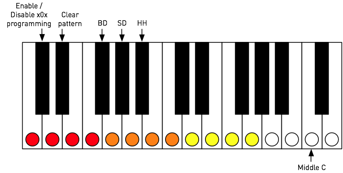
The lowest C# key (on a 61 notes keyboard) is used to enable or disable the generative drum machine, with the programmed x0x pattern taking over. The D# key clears the pattern programmed for the current instrument. The F# / G# / A# keys select the instrument to program. Finally the white keys are used for activating/deactivating notes at each of the 16 steps.
SysEx Backup
Hold Run/stop for a few seconds to request a SysEx dump of all internal settings. The resulting data (or chunks of it) can be be sent to Anushri at later time to restore its settings.
Firmware update
Keep the Hold key pressed while Anushri is powered on to put it into firmware update mode. Every second LED will be lit. The unit is now ready to receive the update data, which can be sent as a SysEx file (with a 250ms or more delay between packets) or as a MIDIfile. The LEDs blink on every received packet. The update takes about 1 minute, and can be restarted in case of accidental interruption. Upon reception of the last packet, the unit immediately boots with the new firmware.
If you want to use a dedicated SysEx transfer tool rather than a sequencer, we recommend Elektron's C6 tool available for both Windows and OS X, with the following timing settings:


Factory reset
Keep the Run/stop key pressed while Anushri is powered on to revert all synthesis and system settings (including tuning compensation!) to their default values.
MIDI implementation
Basics
A MIDI implementation chart is available here.
SysEx
Anushri can receive and transmit settings in system exclusive format. The messages all share the same format:
0xf0 (SysEx)
0x00 0x21 0x02 (Mutable Instruments Manufaturer ID)
0x00 0x08 (Product ID for Anushri)
Command
Argument
Payload
Checksum
0xf7 (End of SysEx)
Command indicates what the receiver should do with the data in the payload block, and argument is a byte that might contain an additional piece of information about what to do with the data.
Payload is a sequence of bytes in nibblized form. For example, the
sequence 0x80 0x56 0x13 is transmitted as
0x08 0x00 0x05 0x06 0x01 0x03.
Checksum is equal to the nibblized-sum, modulo 256, of the bytes. In
the example above, the checksum is equal to 0x80 + 0x56 + 0x13 = 0xe9
and is transmitted as 0x0e 0x09.
Data structure dump
When transfering patch/sequence/program/multi data to Anushri, command is always 0x01 and argument indicates the data structure being sent.
The following table summarizes the different payload types.
| Argument | Affected data structure | Payload size |
|---|---|---|
| 0 | SystemSettingsData | 15 bytes |
| 1 | Patch | 28 bytes |
| 2 | SequencerSettings | 24 bytes |
| 3 | Sequence (first part) | 128 bytes |
| 4 | Sequence (second part) | 33 bytes |
Bulk dump request
When Anushri receives a SysEx block with command equal to 0x11, argument equal to 0x00, and an empty payload, it spits a full SysEx dump of its memory, made of five SysEx packets (command/argument equal to 0x01 0x00, 0x01 0x01, 0x01 0x02, 0x01 0x03 and 0x01 0x04).